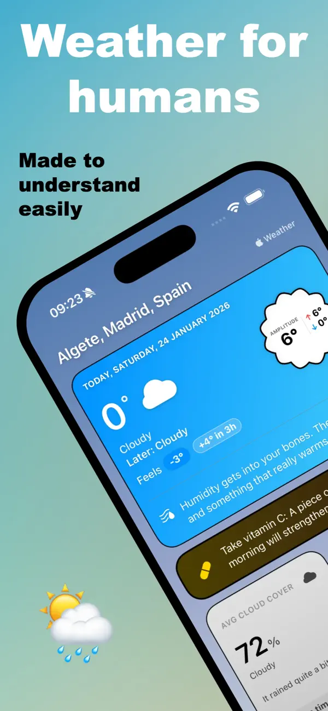
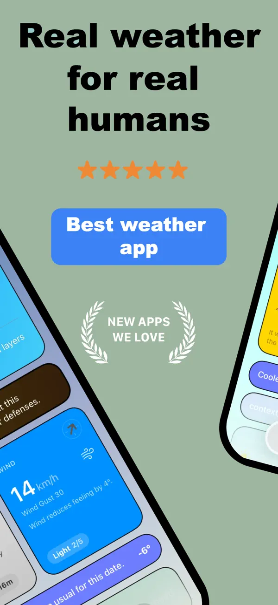
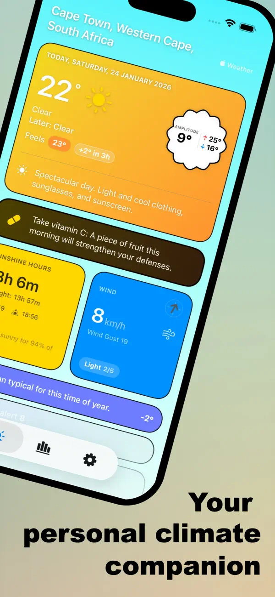
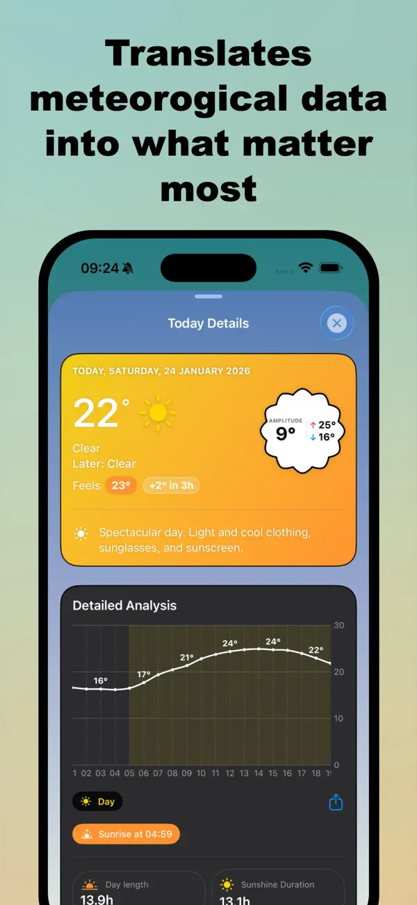

☀
Current conditions
Temperature, feels-like temperature, humidity, UV index, wind, gusts, cloud cover, precipitation and condition descriptions.
A readable weather view for what is happening now, what is coming next, and how today compares with the past.
App Store ID: 6758056677 · iOS 18 or later · English and Spanish localization




Weather for humans combines live weather data with local calculations for daylight, moon phases, historical comparisons, clothing suggestions and weather-aware notices.
These are features represented in the project, not promises about features outside it.
Temperature, feels-like temperature, humidity, UV index, wind, gusts, cloud cover, precipitation and condition descriptions.
Next-hour context, hourly charts, tomorrow details, and forecast summaries for up to five or ten days depending on the view.
Sunrise, sunset, daylight duration, sunshine estimates, moon phase, illumination, moonrise, moonset and visible duration.
Daily comparisons use historical data for the same date. Climate views calculate monthly high, low, rainfall, sun and cloud summaries.
Clothing suggestions, adaptive wellness tips, cloud and wind context, temperature trends and rain severity text are generated in the app.
Local notifications and in-app banners cover severe weather data, rain, snow, frost risk, tropical nights and seasonal transitions.
Current weather, today’s weather, hourly forecast, health tips, wind and clouds/sun widgets share cached weather data through the App Group.
App Intents expose current weather, clothing advice, sky status and section opening. Quick actions and Spotlight indexing are also implemented.
Choose a theme, units, typography, app icon, notification preferences and, in the premium path, home-card order and visibility.
The implementation stores a selected place locally, fetches weather for its coordinates, derives context on the device, and shares a snapshot with widgets.
Direct answers based on the current project and the App Store listing.
Evolution for humans.